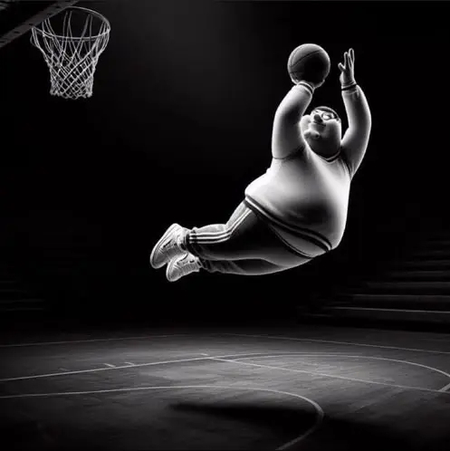
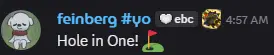

4v4 PASS Time Dictionary (ASIA + OCE)
Last Updated 5/20/26
LEGEND
- Soldier Specific (Solly)
- Demoman Specific (Demo)
- Medic Specific (Med)
- Explosive Exclusive (Solly & Demo)
- Multi Class (more than 1 class)
POPULAR LOADOUTS & PLAYSTYLES
-
Gunboats (Roamer)
STOCK/ORIGINAL + GUNBOATS + ANY WHITELISTED MELEE
Airsot. You're expected to play this loadout -
Manntread loadouts (Soldier)
either ur just really bad at strafing or kafri-
Mannbox
BLACKBOX + MANNTREADS + ANY WHITELISTED MELEE
-
Origimann
ORIGINAL + MANNTREADS + ANY WHITELISTED MELEE
-
Stocktreads
STOCK + MANNTREADS + ANY WHITELISTED MELEE
-
-
Stoic (CaberKnight)
BOOTIES/BOOTLEGGER + SPLENDIDSCREEN + CABER
I'm travelling at the speed of light, I wanna make a supersonic man outta you -
Pipes (HybridKnight)
STOCK/IRONBOMBER + SPLENDIDSCREEN + ANY WHITELISTED MELEE
Now where could my pipe be. garfield! -
DemoKnight loadouts (Demoman)
when your team doesn't have any demo players XD-
Scallop
BOOTIES/BOOTLEGGER + SPLENDIDSCREEN + STOCK/RESKINS
-
Axe
BOOTIES/BOOTLEGGER + SPLENDIDSCREEN + SKULLCUTTER
-
Sword
BOOTIES/BOOTLEGGER + SPLENDIDSCREEN + CLAIDHEAMH MOR
-
-
Stock (Stock)
CROSSBOW + MEDIGUN + ANY WHITELISTED MELEE
Only seen when buffing teammates (or in Oceania) -
Larry (Barnacle/Chariot)
CROSSBOW + QUICKFIX + ANY WHITELISTED MELEE
Medic Jugz. You're expected to play this loadout (in Asia)
GAMEPLAY TERMINOLOGY
Note: Jump = Rocket/Pipe Jumping, Ball = JackHover over the videos to play. Click to full screen and click again to undo that
-
Steal
Hitting an enemy that's holding the ball with your melee to steal it"Stole ball from solly"
-
EasyE Steal
Throwing the ball at the ground for an enemy to pick up and for you to steal"I got easye'd"
-
-
Intercept
Picking up the ball when it’s the enemy team’s color, usually stealing a pass or a handoff"I intercepted the ball"
-
Magnet
Having the ball pulled towards you when you're close enough"The magnet failed me :C"
-
Freak(y) Magnet
When the magnet is... freaky"Freaky ass magnet bro wtf"
Original Clip by 5altytea
-
-
Splash
Hitting the ball with an explosive's blast radius to make make it neutral and/or to move the ball"Splashed pass, ball's on their side"
-
Defend
Attempting to deny a score by blocking your goal or killing. More details in Moose's Defense Guide"GO BACK DEFEND !!!"
-
Inside Defense (Anchor)
Sticking by the goal to deny a score by intercepting or splashing the ball before it goes in"Playing inside (defense)"
-
Outside Defense (Chaser)
Killing/Distracting enemies waiting for a pass when your team is on defense"Solly on left, I'm chasing"
-
Pickpocket/Floor Guy (Playing dribble)
Staying on the ground to intercept a dribble or to steal the ball"Im playing dribble"
-
-
-
Boost/Surf
Sending an enemy/being sent forward with an explosive's blast"Boosted medic :c"
-
Catch
Picking up the ball when it's in the air or thrown on a ramp"I caught the pult"
-
Panacea
Catching the ball as it's falling from upper spawn and scoring"Why panacea I was on up right for handoff"
-
Geometry
When the pass is interupted by map geometry and stops following on to whoever it was locked on to"Whoops, geometry"
-
Jack Armor (Jarmor)
Getting the ball splashed back into your possession as soon as you throw it"I got jarmor'd bruh"
-
Goomba('d)
Bouncing on an enemy's head"I goomba'd someone and scored"
-
Mario('d)
Bumping an enemy from below"I mario'd them and they scored :C"
-
DM
Primarily going for kills"We need more DM"
-
Buff(s)
Overhealing your teammates. Ideally during set-up and with the Stock load out."Can you switch to med and buff pls?"
-
Demothing
Throwing the ball on a ramp and trimping to catch it in the air"i can do demo ting . demo bing !!!"
-
Dribbling
Jumping to confuse enemy defenders or to reposition with the ball in hand"Dont jump yet they're dribbling"
-
Wall Dribble
Throwing the ball at a wall and jumping on the ground in a way that neutrals the ball for the player to pick up again"Im a stoic dude I cant steal the ball after they wall dribble"
-
Rebound Dribble
Throwing the ball near the lower part of a ledge/wall so it neutrals when it hits the ground and magnets towards the player when they jumpNote: Med can wall dribble by VSH climbing on the ground
"My magnet failed my rebound dribble" -
Pencil Dribble
Throwing the ball down then jumping and catching it after it bounces off the ground"Pencil dribbles are really easy to airshot"
-
Fence Dribble
Dribbling around the fence, which is a/are small structure/s in front of the goal"Hey guys I just learned how to fence dribble can I get master"
-
Sagejay Dribble
Throwing the ball down but instead of jumping in the opposite direction to catch it you continue jumping forward"I believe that sagejay dribble"
Original Clip by slesh. -
Laxson Dribble
Rebound dribbling on or near the enemy spawn doors"Laxson dribbles in the big 26 what are we doing bro"
-
-
Self Glop
Throwing the ball onto ultra hile surfing on upper left/right and jumping when the ball bounces back"Self glopb!!"
-
Ball Pogo
Jumping on the ball to boost yourself in the air"Blal pogo"
-
Instadet
A special ball pogo where the ball is immediately picked up after jumping on the ball"INDESTATE !!!"
-
-
Pult
Throwing the ball on a map entity that catapults the ball away from your goal towards the middle of the map"Pult ball I'm on mid"
-
Slam-a-pult
Splashing the ball after it pults to send it very far"Oh they slamapulted guyz"
-
-
Lob
Throwing the ball at a high angle, usually as a mix-up or in an attempt to score / Throwing the ball loose to start a Self Bomb"I went for the lob and sharted :C"
-
Hookshot
Lobbing at a wall then wall jumping on the same wall to pick it"I went for the hookshot and sharted :C"
-
Extender
Throwing the ball at a wall or ramp while surfing, then jumping and catching the ball when it bounces backNote: medic with the VSH climb can extender but it's by melee-ing the ball
"He sharted the extender LOL" -
Self Bomb
A series of jumps/trimps and tricks performed one after the other to bring the player and ball towards the enemy goal for a scoreNote: Hover video for more info on this specific self bomb
"Nice self bomb"-
Death Bomb
Killbinding while the bomb is following you for it to fall in the goal after you die"Nice death bomb"
-
Alive Bomb
Directing the ball with your magnet for it to fall in the goal"OMG alive bomb"
Original Clip by bobby_ray
-
-
Pushing/Pulling
Splashing the ball as it spawns to bring it towards or away from your position"Pulling right side"
-
Evil Pull
Pulling the ball while you're on the enemy side to score a goal"I'm evil pulling play lower"
-
-
Winstrat
Performing a self bomb that, when timed correctly, allows you to catch the ball as it spawns and immediately scoreNote: QuickFix medic can winstrat but you need a soldier to do the regular winstrat jumps to do so
"Winstratting upper" -
Shart
Missing a free goal / Failing something in generalNote: Hover video for more info on this specific self bomb
"Nice shart bro"-
Mickey Magnet
Going for an intercept but the ball magnet fails for whatever reason. -
Toiletbowl
Sharting in a way where the ball neutrals and circles around the inner rim of the goal"IT TOILET BOWLLLLEEDDD 😭😭😭😭"
-
-
Bonsteal
Blocking a teammate's score by catching the ball before it goes in the goal
Named after Bonschicklol, a very notorious player during the early days of APTA (turn on audio lol)
"WHYYYY" - dimandos48 after the first ever bonsteal -
Handoff
Passing to a teammate without locking on for them to catch"Handoff upper left"
-
Chinese/Death Handoff
Killbinding with the ball in hand for a teammate to catch"I'll chinese, jump quick"
-
Japanese Handoff
Having a teammate catch the ball while it's following you to handoff, usually killbinding beforehand"JAPANESE THIS BRO"
-
Korean Handoff
Having the teammate catch the ball while its magnet is still in effect"OH MY GOD KOREAN" - unc (_YEE)
-
-
Ego
Selfishly going for solo goals, usually failing to do so"y u ego u nub"
-
Baiting
Positioning yourself forward when your team is on defense. More details in Moose's Defense Guide

-
Cherry Picking
Purposefully positioning yourself forward, usually on ultra or gay/pride"Im cherrying on gay"
-
Right/Left Dimandos
Pixel walking on upper left/right to cherry pick
-
MISCILANEOUS TERMS
Note: These are non-gameplay terms and other random joke-y stuff-
Baiting (PUGs)
Adding yourself to the queue and failing to show up when its filled for at least 10 minutes -
Cheese
Anything that is lucky, or unfun to play against"Another demothing? Really? How cheesy can this guy get"
-
Mute
A player who doesn't have a mic due to temporary technical issues, or due to simply not having oneJust to be clear, you need a mic to play.
-
Three Pointer Peter
When you jump from mid and score the ball mid air
-
Hole in One! ⛳
When the ball after getting catapulted lands in the hole on upper (AKA butthole)
-
Laxson
The inside defender"I'm Laxson rn"
REGIONAL TERMS
Note: These are used to distinguish players that play on different regions/pass time servers-
Burger
North American (4v4 PASS Time) -
Gyro
European (4v4 PASS Time EU) -
Noodle
Asian (ASIA PASS Time Association) -
Vegemites
Oceanian (PASS Time OCE)